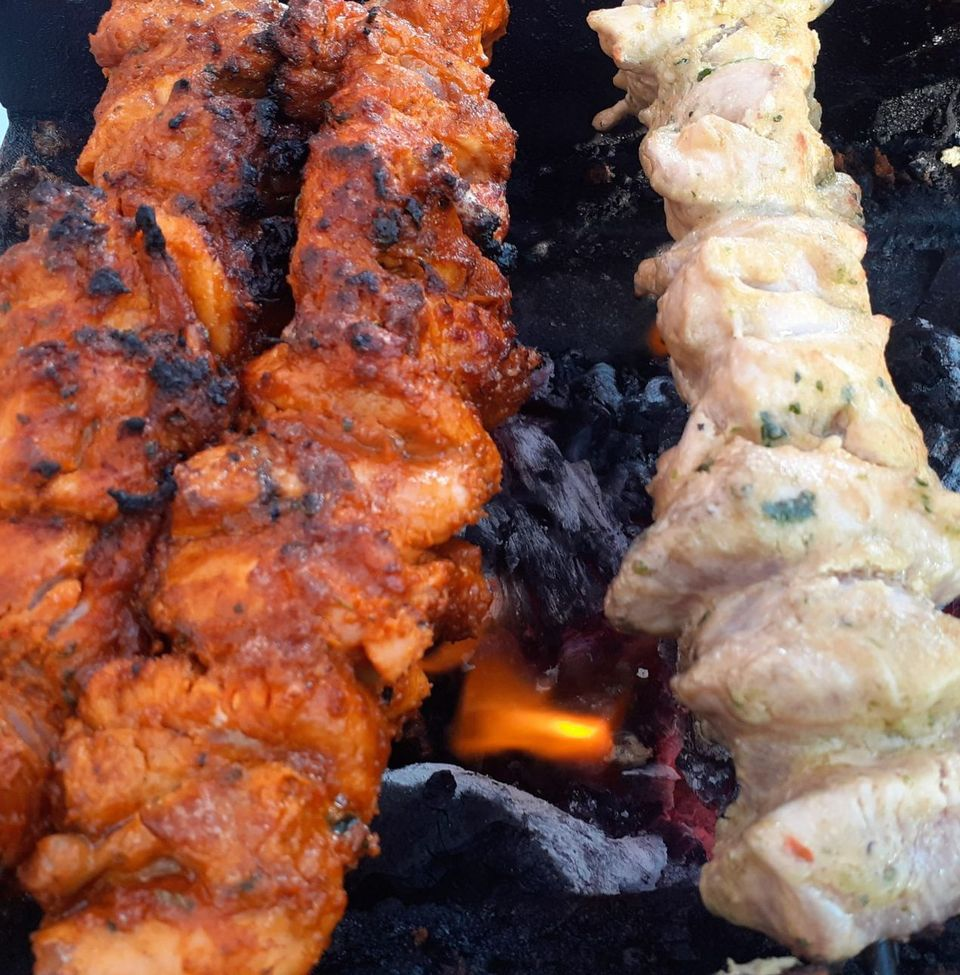
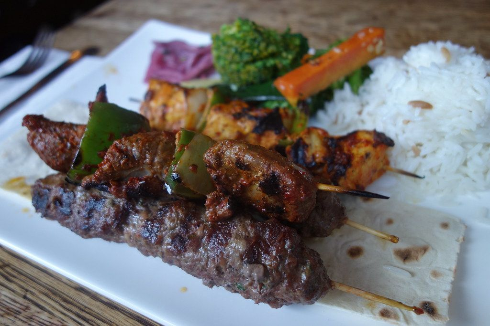

Ana sayfa Menü
Menü
Ocaktan, yanından, üstüne. Fiyat yazmadık: günün çeşitlerini ve fiyatları WhatsApp'tan ya da telefonla sormanız en doğrusu.
Ocaktan
Ateşin başından gelenler. Cağ kebabı şiş sayısıyla istenir.
Cağ kebabı
Yatay şişte dönen etten ince ince kesilip küçük şişlere alınır. Porsiyonu şiş sayısıyla söyleyin; geleneksel olarak lavaşla yenir.
Kaç şiş? Sayaca geçinCağ dürüm
Şişten sıyrılan et lavaşa sarılır; ayakta ya da yolda yemek için pratik bir seçenek.
Izgara çeşitleri
Köfte, tavuk şiş gibi kebapçıların çoğunda bulunan ızgaralar. Hangilerinin olduğunu sorun.


Şişin yanına ne gelsin?
Lavaşı, soğanı, közü siparişte tek tek yazın. Aşağıdaki “Var mı?” düğmeleri sorularınızı tek mesajda toplar.
Yanına
Cağ kebabının sofradaki eşlikçileri.
Lavaş
İnce, yumuşak yassı ekmek. Eti şişten sıyırmanın ve soğanla sarmanın yolu.
Soğan salatası
İnce doğranmış soğan; çoğunlukla sumak ve maydanozla. Yağlı ete ferahlık katar.
Közlenmiş biber ve domates
Ateşte kabuğu kararan sivri biber ve domates; hafif isli bir tat verir.
Yeşillik ve limon
Maydanoz, roka, nane gibi yeşillikler ve limon dilimi.
Yoğurt ya da cacık
Kebabın yanında serinletici bir kâse.

Kaşıkla ve üstüne
Başlangıç ve kapanış.
Günün çorbası
Mercimek gibi klasik bir çorbayla başlamak isteyenler için. Günün çeşidini sorun.
Tatlı
Kebabın üstüne bir tatlı. Hangi tatlıların olduğunu sorun.
Çay
Yemeğin üstüne ince belli bardakta çay.
İçecek
Kebabın yanına soğuk bir şey.
Ayran
Kebabın klasik eşlikçisi; tuzu ve ekşiliğiyle yağlı eti dengeler.
Meşrubat ve su
Soğuk içecek seçeneklerini sorun.
Bugün var mı? Tek mesajla sorun
Menüde “Var mı? Listeye ekle” düğmesine dokunduğunuz kalemler bu mesaja eklenir. Hepsini tek seferde sorun; fiyatları da birlikte öğrenin.
Henüz kalem seçmediniz; menüdeki “Var mı?” düğmelerine dokunun.
Mesajınız
Merhaba Bizim Cağ Kebap, Bugünkü menünüzü öğrenebilir miyim? Teşekkürler.
Bir cağ sofrası nasıl kurulur?
Genel bir düzen; ocaktan ocağa değişir. Paket siparişte de aynı mantık işler: şiş ortada, eşlikçiler çevresinde.
- AŞişler ortada
Sıcak şişler tabağa yan yana dizilir; biten şişin yerine yenisi gelir.
- BLavaş elinizin altında
Eti şişten sıyırmak için kat kat lavaş.
- CSoğan salatası
Sumaklı, maydanozlu soğan; her lokmaya biraz.
- DKöz
Közlenmiş biber ve domates.
- EAyran
Kişi başı bir bardak, yağlı eti dengeler.
- FYeşillik ve limon
Ağzı ferahlatır, sona saklanır.
Sipariş verirken
Menü sade; isteklerinizi açık yazmak siparişi kolaylaştırır.
- Şiş sayısını söyleyin. Cağ kebabında porsiyon şişle sayılır; emin değilseniz kişi sayısını yazıp öneri isteyin.
- Acı ve soğan tercihinizi yazın. “Acısız”, “soğansız” gibi notları mesajınıza ekleyin.
- Lavaşı ayrı isteyin. Paket siparişte ayrı sarılan lavaş daha az yumuşar.
- Alerjiniz varsa mutlaka belirtin. İçerikleri sipariş öncesinde sorun.
- Fiyatı sorun. Bu sitede fiyat yer almaz; güncel bilgi telefonda ya da WhatsApp'ta.